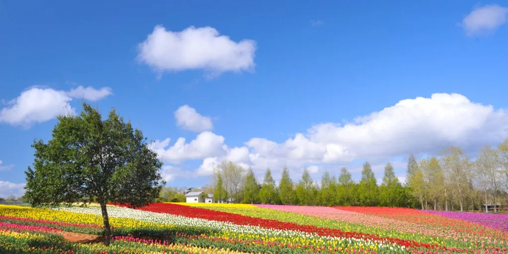
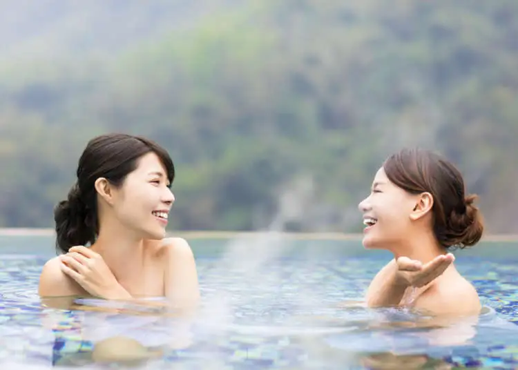

Cherry Blossoms

Every spring, Japan's cherry blossoms bloom, attracting countless visitors. The pink petals shimmer in the sunlight, creating a dreamlike scenery.
Flower Fields
In spring, many flower fields burst into colorful blooms, resembling a rainbow sea that captivates all who visit.
Hot Springs
Experiencing a hot spring bath in spring is a unique pleasure, allowing you to relax in a natural setting while enjoying beautiful views.